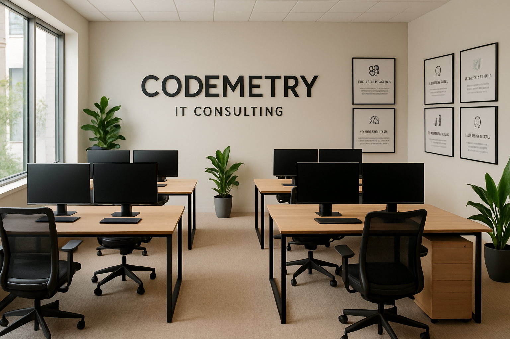

Codemetry IT Consulting es una consultora tecnológica especializada en diseño de soluciones digitales, infraestructura cloud, desarrollo de software a medida y ciberseguridad. Nuestro enfoque combina precisión técnica y visión estratégica, ayudando a empresas a evolucionar tecnológicamente con rapidez, seguridad y eficiencia.
